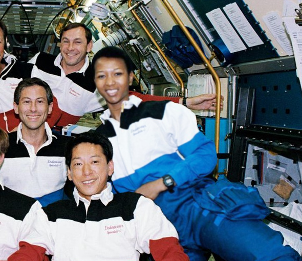
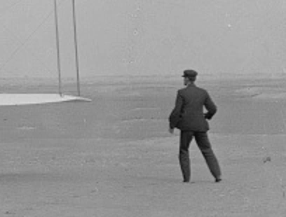
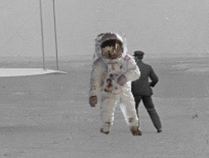
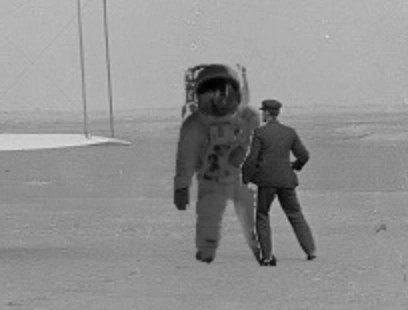
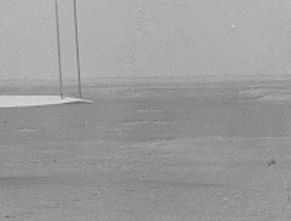
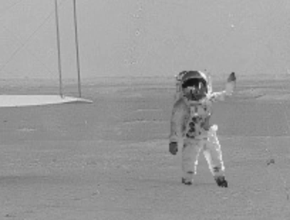
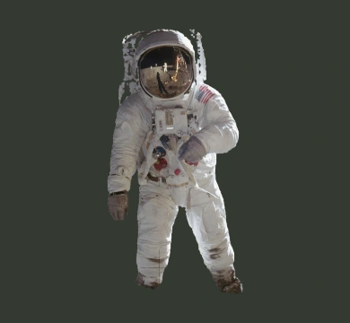
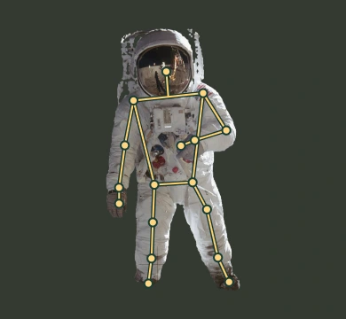
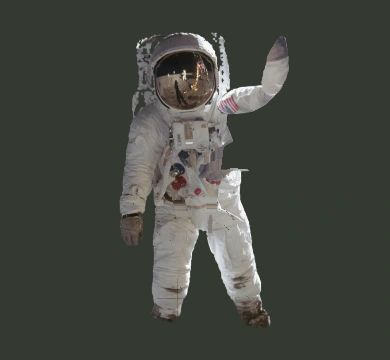
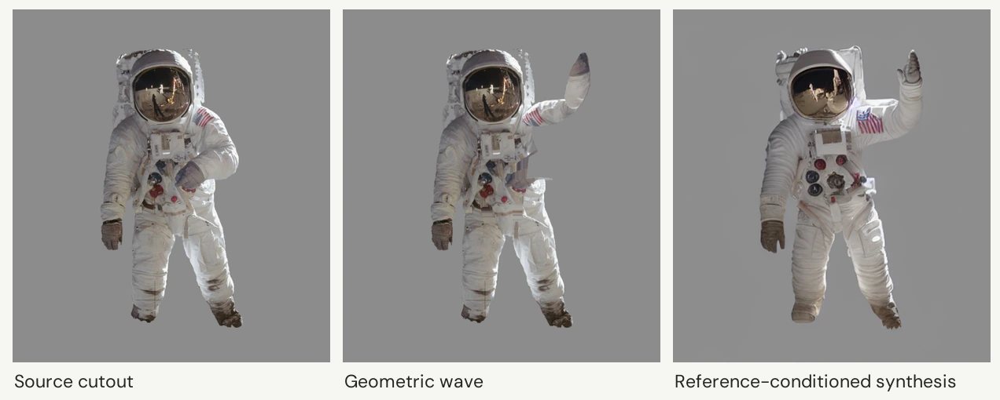

Field notes
What happens to a photograph when someone new steps into the frame? Follow an astronaut into the Wright brothers’ first flight, then watch one dancer step behind people in two different photographs.
Which one is the original photograph?
Look at Mae Jemison’s face and blue sleeve in these two crops. One is the original exposure. In the other, the studio inserted her in exactly the same pose. Choose the image you think is original.
See the untreated insertion

Moving in a family photograph
Watch the same visitor join a picnic, a kitchen, a 1942 stroller portrait and a sunset walk. The kitchen counter and stroller stay in front where the visitor passes behind them. On wet sand, the reflection moves with the visitor’s supporting foot. Each example opens in the studio with the same starting placement. Explore the family photographs
For a photograph you upload, the studio can estimate relative depth once, then use the visitor’s floor contact and change in apparent size to follow motion toward or away from the camera. For seated or cropped visitors, use the depth slider. A hand-drawn outline can protect a foreground object when the scene depth is ambiguous. Glass, mirrors and contact between individual limbs and people remain difficult. Depth Anything V2
On this laptop the live workflow processed 751 distinct 640 × 480 camera timestamps over 30.001 seconds on an uploaded 1080 × 721 picnic photo, with automatic depth and contact shadows active. The file-backed camera replayed the same ten-second take at its native 25 fps. Live measurements · Four-scene frame checks
Belonging where you stand
A cutout pasted into a photograph gives itself away in four ways: it is the wrong size for where it stands, it floats, it is lit by a different room, and its edges are sharper than anything around it. The live demo addresses each one before the visitor appears.
Faces are about the same size on everyone, so the faces already in the photograph calibrate how large a person is at each depth. Level ground comes steadily nearer toward the bottom of a picture, which fixes the row where someone at a given depth stands. A waist-up camera view is only placed where something nearer in the photograph covers its cropped edge, or in the near foreground where the photograph’s own border crops it. Nearer ground does not count as cover.
A harmonization network then looks at the untreated visitor inside the photograph and predicts how that picture would have rendered them. The studio keeps the answer as a color table, so the tone holds steady while a live visitor moves. Black-and-white and toned prints give the visitor the print’s own color for each brightness. Finally the visitor is softened to the photograph’s sharpest edges at that depth, picks up a rim of light from the scene behind, and casts a soft shadow in the direction the photographed shadows fall. If smooth areas of the photograph show more grain than the visitor, the studio adds fine grain inside the visitor’s outline. In a live take, that grain stays fixed to the photograph as the visitor moves. PCT-Net
Single-view depth is relative and approximate. A visitor lit from the front will not become a true silhouette in a backlit scene, and a spot with nothing to stand behind leaves a waist-up visitor only the foreground.
Standing behind Wilbur



Watch the edge of Wilbur’s coat. The studio draws the photograph, adds the visitor, then redraws the original pixels inside Wilbur’s outline. The visitor keeps the same size and position in both composites. The astronaut’s suit darkens because Wilbur’s coat supplies the reference tones. A pale suit and a dark coat make a deliberately demanding pair.
One movement, two photographs
The same ten-second studio dance plays behind Wilbur Wright in a monochrome print and behind Mae Jemison in a color crew photograph. Each frame passes through the browser’s person segmenter once, then the three treatments share that cutout and placement. Watch the dancer’s hand and bent knee disappear behind the foreground figure.
In the first clip a dark coat drives the matched visitor toward charcoal. In the second, Mae’s blue suit gives the pale sweater a violet cast. These are two examples a viewer can judge by eye. The dancer comes from licensed stock footage. Watch the source take · Frame and overlap counts
Make a composition
- Add a person
- Open a scene and import a visitor photo, video or webcam feed in Layers. A transparent PNG carries its own outline. MediaPipe segments people in an opaque image or each incoming frame. With several people in a still, use Select person to isolate the visitor you want. Drag the visitor into place and adjust the scale.
- Control the overlap
- Choose Edit foreground outline and tap the original person who should stand closest to the camera. SAM 2 ranks mask candidates from your tap. Add a point on a missed region, exclude a background point, or refine the boundary with the brush. Hand trace lets you draw a polygon. One foreground outline can hide any part of the visitor that passes behind it.
- Replace a person
- Choose Replace and outline the person to remove. The local service fills the selected region from the surrounding scene. Place the replacement over this background, then outline any other original person who should stand in front. Large gaps, patterned walls and a chair partly hidden by the original person can expose errors in the fill.
- Match and save
- Under Finish, compare the original visitor colors, a simple grayscale or brightness correction, and bounded color transfer. The transfer measures channel means and spreads in CIE Lab on the selected subject and the first usable visitor frame. Keeping that calibration fixed suppresses color changes as a visitor leans. Save photo exports the canvas. Keep person in scene lets you add another visitor.
Taking Wilbur’s place


A tight outline left a recognizable dark silhouette of Wilbur. A three-pixel removal margin included the soft edges of his coat, hat and shoes. LaMa then continued the horizon and sand through the opening. The filled sand looks slightly smoother than the print around it. The final panel adds the astronaut with a raised glove and the grayscale correction.
Raising a hand from a single photograph



Open the Pose editor and check that the joints sit on the cutout. Adjust source joints corrects those anchors. Switch it off to move the limbs, try a preset or choose a reference photograph. With a selected scene subject, the studio can also copy that person’s pose. A webcam or video can supply a real pose directly, or a frozen frame for editing.
The pose editor maps a textured mesh along the arms, legs, torso and head. When a forearm crosses the torso, their separate layers can overlap. A reference photo supplies projected bone directions and estimated depth, and the source supplies body proportions. The raised glove retains its original viewing angle. Look under the raised arm for a jagged edge where the original sleeve hid the suit. Turning a person around, revealing a missing hand or changing individual fingers requires visual detail outside this two-dimensional model.
Redrawing the raised hand

In the pose editor, open Generate pose details to synthesize a photographic variation. Stable Diffusion 1.5 starts from the edited cutout. OpenPose ControlNet conditions the limbs on the target skeleton, and IP-Adapter Plus conditions the appearance on the original photograph. The generator can invent the underside of a glove that the camera never saw. It can also change a face, insignia or clothing pattern. Inspect the geometric and generated previews together before accepting the cutout.
On this laptop’s 4 GB RTX 3050, a 512 × 512 example took about 65 seconds with the pose guide and 84 seconds with the additional appearance reference. The interactive pose editor and camera compositor run independently of that generation step.
Evidence and evaluation
The panels above are exports from the local renderer. Browser checks exercise source landmark detection, reference-photo transfer, manual anchor correction, a colored hand crossing a differently colored torso, and returning to the original pose.
The proposal’s viewer and timing studies remain open. The planned comparison uses eight development photographs and twelve held-out scenes, the same recorded lean and placement, and randomized choices between treatments. The studio’s evaluation tools support comparing a hand trace with a first tap, comparing the three color treatments, and exporting session measurements. Three first-time users are needed for the setup-time study. The performance target is 24 fresh composited frames per second during a 30-second webcam run at 640 × 480 on the demo laptop.
In Edge on the demo laptop, the blended compositor displayed 752 freshly segmented camera frames in 30.051 seconds, or 25.02 fps. A file-backed camera replayed the 640 × 480 dance take at its original 25 fps. The recording repeats every ten seconds. A run with the physical webcam remains open. Device details and processed frame timestamps
Photographs and methods
- John T. Daniels, first powered flight, Kitty Hawk, North Carolina, December 17, 1903. Library of Congress, Wright Brothers Negatives, LC-DIG-ppprs-00626. Collection record ↗
- Neil Armstrong / NASA, Buzz Aldrin on the lunar surface, Apollo 11, July 1969, AS11-40-5903. The studio uses a cutout from the photograph. NASA image record ↗
- NASA / Johnson Space Center, Spacelab-J crew aboard Endeavour, September 1992, STS047-09-009. The motion comparison uses a detail with Mae Jemison in the foreground. NASA image record ↗
- Antoni Shkraba, studio dancer, Pexels video 7571381. The motion comparisons use a cropped, silent ten-second excerpt, then isolate and recolor the dancer. Source film ↗ · Pexels license ↗
- The local service uses SAM 2.1 for prompted selection and LaMa for inpainting when those models are installed. The lightweight configuration uses GrabCut and Telea inpainting. SAM 2 ↗ · LaMa ↗
- Google MediaPipe supplies the visitor matte and the initial anatomical landmarks. Image Segmenter ↗ · Pose Landmarker ↗
- The bounded channel transfer adapts the statistical approach of Reinhard, Ashikhmin, Gooch and Shirley (2001) to CIE Lab. Color Transfer between Images ↗